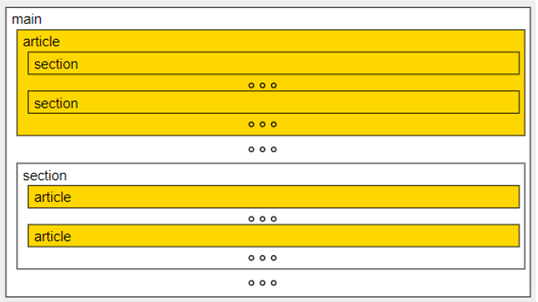

ARTICLE
La etiqueta ARTICLE está pensada para agrupar el contenido de la página que forma una unidad en sí misma
desde el punto de vista temático. Es decir, que un artículo debería poder publicarse y leerse como documento
independiente, aunque una página puede estar formada por varios artículos de temática relacionada o no.
Un elemento ARTICLE puede contener otros elementos ARTICLE que están
relacionados con el contenido
del ARTICLE que los contiene.
Un elemento ARTICLE puede contener elementos SECTION y viceversa.

Las etiquetas ARTICLE y SECTION son similares. La diferencia entre ellas es que
ARTICLE
es para partes que forman una unidad en sí mismas y SECTION es para partes de una unidad
mayor.
Si la página trata de un único tema y se va a utilizar un único elemento ARTICLE, es
preferible utilizar la etiqueta MAIN.